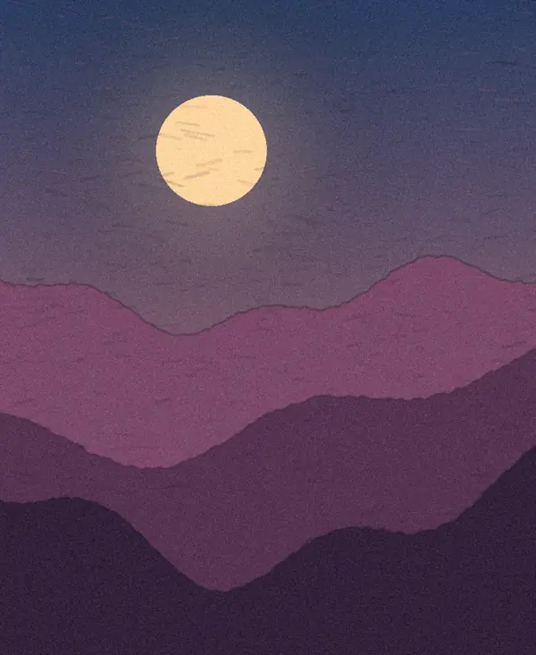

أهلًا، أنا
سمية محمد مرشد
أرسم بالألوان، وأنسج بالصوف، وأتعلّم كل يوم شيئًا جديدًا.



حرّك المؤشر فوق اللوحات ✦
نبذة عنّي
أحب أن أصنع الأشياء بيدي. بدأت بالرسم صغيرة على هوامش دفاتري، ثم أخذتني خيوط الصوف إلى عالم النسج.
أؤمن أن اللوحة والمنسوجة تتكلمان اللغة نفسها: لون، وإيقاع، وصبر.
طموحي أن يكون لي معرض فردي، وأن أعلّم غيري أن الجمال يبدأ بخيط واحد.
خمس مهارات أعتزّ بها
اقلب البطاقة لتعرف أكثر
بين الخيط واللون
كل وجه من هذا المكعب نقشٌ نسجته أو رسمته. اسحبه بإصبعك أو بالمؤشر ودوّره كما تحب.
النقوش مستوحاة من السدو، فن النسيج البدوي في الجزيرة العربية.
رحلتي، وإلى أين أمضي
البداية
أقلام تلوين، وهوامش دفاتر المدرسة، وكثير من الشمس والكثبان.
أول خيط
تعلّمت أساسيات النسج، وكانت أول قطعة لي شريطًا صغيرًا مليئًا بالأخطاء، وما زلت أحتفظ به.
نَوْل
جمعت لوحاتي ومنسوجاتي في متجر صغير أسميته «نَوْل»، تُصنع كل قطعة فيه يدويًا.
الآن أتعلّم
الصباغة الطبيعية للصوف، وتقنيات النسج الأرضي، وبناء حضوري على الإنترنت.
طموحاتي القادمة
- معرض فردي يجمع اللوحة والمنسوجة في مكان واحد
- ورشة أعلّم فيها النسج للمبتدئات
- مجموعة منسوجات بألوان طبيعية مئة بالمئة
أين تجد أعمالي؟
لنصنع شيئًا جميلًا معًا
لطلب لوحة مخصّصة، أو منسوجة بألوانك، أو حتى لتبادل الأفكار… راسلني.
sumaya.morshed@gmail.com